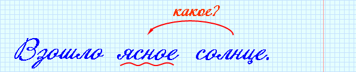
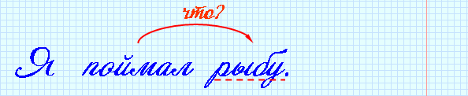
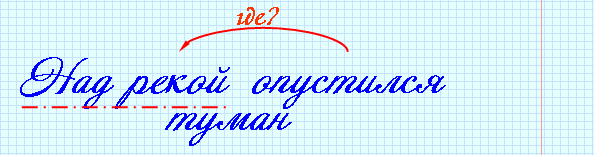

|
Подлежащее – это главный член предложения, который обозначает предмет речи и отвечает на вопросы именительного падежа кто? что? |
|
Сказуемое – главный член предложения, который обозначает то, что говорится о предмете речи, что с ним происходит. Сказуемое отвечает на вопросы что делает предмет? какой он? кто он такой? и др. |
 |
Если подлежащее и сказуемое выражены существительными в И.п., между ними ставится тире. Если в составе сказуемого есть слово это, тире ставится перед ним. |
 |
Астана – столица Казахстана. Астана – это столица Казахстана. |
|
Определение – второстепенный член предложения, который обозначает признак предмета и отвечает на вопросы какой? чей? |

|
Дополнение – второстепенные член предложения, который обозначает предмет и отвечает на вопросы косвенных падежей. |

|
Обстоятельство – второстепенный член предложения, который обозначает время, место, причину, образ действия и т.д. Обстоятельство отвечает на вопросы где? когда? почему? как? зачем? и др. |

|
Предложения, которые состоят только из главных членов, называются нераспространёнными. Предложения, в которых есть второстепенные члены называются распространенными. |
|
Нераспространённое предложение: Идет дождь. Распространённое предложение: В городе всю неделю идет дождь. |